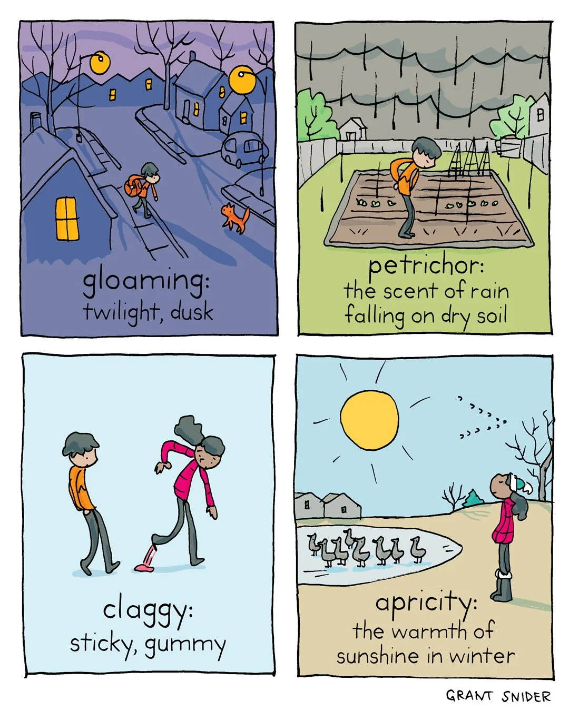

Happy Thursday! Thank you for supporting the Daily Bulletin project.
- Suggest improvements to the Daily Bulletin project.
- Unsubscribe if you no longer wish to receive emails from the Daily Bulletin project.
Wellbeing Inspirations
Want to contribute to a future Daily Bulletin? Share your inspirations to give everyone some morning wellbeing energy!
Cartoon of the Day

Extracted from Pintrest. Shared by Iori
Delicious Dinings
| Day | Meal | Options |
|---|---|---|
| Thu | Breakfast | Continental Counter |
| Lunch | Vegetable Paella 🌱 | |
| Tomato & Mozzarella Fusilli 🌱 | ||
| Dinner | Chicken Cajun Pasta Bake | |
| Roast Red Pepper and Tomato Risotto 🌱 | ||
| Fri | Breakfast | Burrito |
| Lunch | Fish & Chips | |
| Crispy Buttermilk Quorn 🌱 | ||
| Dinner | Hong Kong Maccheroni | |
| Roast BBQ Pea Protein |
The catering team would like to remind everyone to wash their hands before coming to the dining hall, and to refrain from eating in the servery area. Thank you!
Retrieved from Shared Weekly Menu. For reference only; accuracy not guaranteed.
Important Events
| Day | Time | Event | Location |
|---|---|---|---|
| Thu |
Retrieved from What's On This Week.
Today in History
- 906 – Ahmad ibn Kayghalagh, an Abbasid military officer of Turkic origin, led a raid against the Byzantine Empire, taking at least 4,000 captives.
- 1895 – At Gare Montparnasse in Paris, an express train derailed after overrunning the buffer stop and crashed through the station wall, with the locomotive landing on the street below .
- 1936 – Dod Orsborne, captain of the Girl Pat, was convicted of its theft and imprisoned, having caused a media sensation when it went missing.
- 1966 – With their album The Supremes A' Go-Go, the Supremes became the first all-female group to reach number one on the Billboard 200 chart.
Retrieved from Wikipedia.